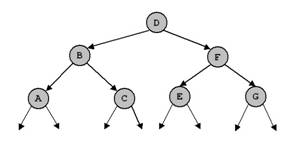
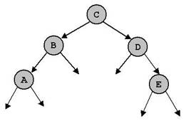
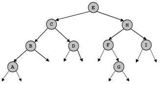

Note: You can select and do some options according to your ability only. We would like to note you that the more questions you do the better for you in doing final practical and writing exams.
Writing exercises
1. Give the preorder, inorder, postorder,and level-order traversals
of the following binary trees.
(a) (b)
(c) 
(c)
(b)
(a)
2. For each of the following key sequences
create the binary search tree obtained when the keys are inserted one-by-one in
the order given into an initially empty tree:
(1) 4, 3, 1, 11, 5, 9, 2, 6, 15, 12.
(2) 12, 7, 1, 3, 2, 5, 10, 8, 6, 9.
Give the preorder, inorder, postorder,and
level-order traversals of the created binary trees.
In (1) delete keys 2, 3 and 11. In (2) delete
keys 5, 6 and 7. After each time of deleting, give the above traversals.
3. For each of the key sequences in question 2 create the AVL
tree obtained when the keys are inserted one-by-one in the order given into an
initially empty tree.
Give the preorder, inorder, postorder,and
level-order traversals of the created binary trees.
4. The tree (c) in question 1 is height balanced (AVL). Delete the node D and perfom necessary operations so that the tree is still AVL after deletion.
5. Consider a nearly complete binary tree with n
nodes.
a. For what values of n is a nearly complete binary tree a
full binary tree?
b. For what values of n is a nearly complete binary a complete (perfect)
binary tree?
6. Suppose we have numbers between 1 and 100
in a binary search tree and we want to search for the number 57 in the tree.
Could the following sequence be the sequence of nodes to be examined?
2, 90, 63, 70, 68, 72, 57
Practical exercises
Question 1. Write a Java program to implement a binary search
tree of integer values with the following operations:
1. boolean isEmpty() - return true if a tree is empty,
return false otherwise.
2. void clear() - clear a tree.
3. Node search(int x) - Search a node having value x. Return a
reference to that node if found, return null otherwise.
4. void insert(int x) - check if the key x does not exists in a
tree then insert new node with value x into the tree.
5. void breadth() - traverse a tree.
6. void preorder(Node p) - recursive preorder traverse of a tree.
7. void inorder(Node p) - recursive inorder traverse of a tree.
8. void postorder(Node p) - recursive postorder traverse of a tree.
9. int count() - count and return number of nodes in the tree.
10. void dele(int x) - delete a node having value x.
11. Node min() - find and return the node with minimum value in the tree.
12. Node max() - find and return the node with maximum value in the tree.
13. int sum() - return the sum of all values in the tree.
14. int avg() - return the average of all values in the tree.
15. The height of a tree is the maximum number of edges on a path from the root to a leaf node
(thus the height of a tree with root only is 0). Write a function that
returns the height of a binary tree.
16. The cost of a path in a tree is sum of the keys of the nodes
participating in that path. Write a function that returns the cost
of the most expensive path from the root to a leaf node.
17. Write a function to determine whether a given binary tree is AVL or
not.
18. What value does the following function return when called with each of the
binary trees in question 3?
int mystery(Node x) {
if (x == null)
return 0;
else
return max(mystery(x.left), mystery(x.right));
}
19. Write a function to determine whether a given binary tree is a heap.
Question 2. Write a Java program to implement a binary search tree of string values with operations in the above list.